|
|
Daniele Giunchi |


Publications
| 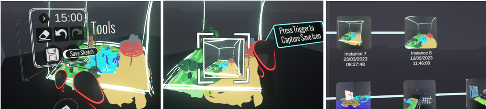 |
PaintBranch: Asynchronous Collaborative Art in Virtual Reality Ana David, Daniele Giunchi, Stuart James, Anthony Steed and Augusto Esteves Poster at IEEE VR 2025 Keywords: |
| 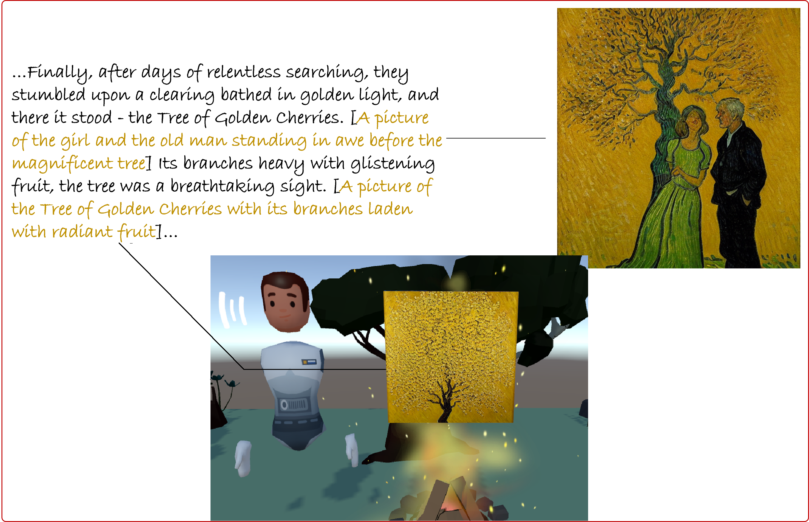 |
Around The Virtual Campfire: Early UX Insights Into AI-generated Stories In VR Elia Gatti, Daniele Giunchi, Nels Numan and Anthony Steed IEEE AIxVR(2025) Keywords: |
| 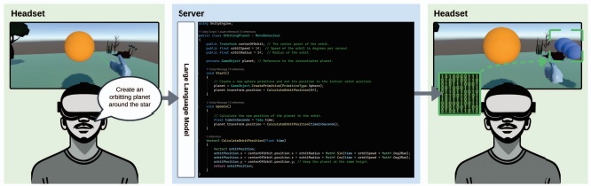 |
DreamCodeVR: Towards Democratizing Behavior Design in Virtual Reality with Speech-Driven Programming Daniele Giunchi; Nels Numan; Elia Gatti; Anthony Steed Proceedings of IEEE VR(2024) Keywords: |
| 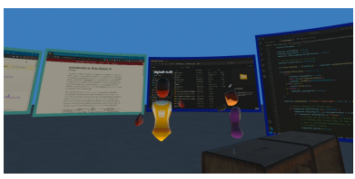 |
STREAMSPACE: A Framework for Window Streaming in Collaborative Mixed Reality Environments Giunchi, Daniele; Bovo, Riccardo; Numan, Nels; Steed, Anthony Poster at IEEE VR(2024) Keywords: |
| 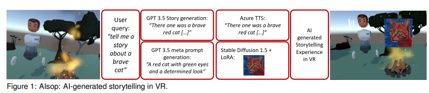 |
AIsop: Exploring Immersive VR Storytelling Leveraging Generative AI Gatti, Elia; Giunchi, Daniele; Numan,Nels; Steed, Anthony Poster at IEEE VR(2024) Keywords: |
| 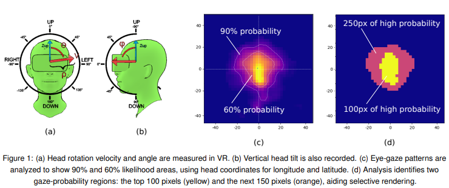 |
Fovea Prediction Model in VR Giunchi, Daniele; Bovo, Riccardo; Bhatia, Nitesh; Heinis, Thomas; Steed, Anthony Poster at IEEE VR(2024) Keywords: |
|
Extending the Open Source Social Virtual Reality Ecosystem to the Browser in Ubiq Sebastian Friston, Ben Congdon, Nels Numan, Klara Brandstätter, Lisa Izzouzi, Felix Thiel, Jingyi Zhang, Daniele Giunchi, David Swapp, Anthony Steed Proceedings of the 28th International ACM Conference on 3D Web Technology (2023) Keywords: |
|
|
Speech-Augmented Cone-of-Vision for Exploratory Data Analysis Riccardo Bovo, Daniele Giunchi, Ludwig Sidenmark, Joshua Newn, Hans Gellersen, Enrico Costanza, Thomas Heinis CHI'23 Keywords: |
|
|
Ubiq-Genie: Leveraging External Frameworks for Enhanced Social VR Experiences Nels Numan, Daniele Giunchi, Benjamin Congdon, Anthony Steed 2023 IEEE Conference on Virtual Reality and 3D User Interfaces Abstracts and Workshops (VRW) Keywords: |
|
|
Towards Outdoor Collaborative Mixed Reality: Lessons Learnt from a Prototype System Nels Numan, Ziwen Lu, Benjamin Congdon, Daniele Giunchi, Alexandros Rotsidis, Andreas Lernis, Kyriakos Larmos, Tereza Kourra, Panayiotis Charalambous, Yiorgos Chrysanthou, Simon Julier, Anthony Steed 2023 IEEE Conference on Virtual Reality and 3D User Interfaces Abstracts and Workshops (VRW) Keywords: |
|
|
Cone of Vision as a Behavioural Cue for VR Collaboration Riccardo Bovo, Daniele Giunchi, Muna Alebri, Anthony Steed, Enrico Costanza, Thomas Heinis Proceedings of the ACM on Human-Computer Interaction, CSCW2 Keywords: |
|
|
Explorative Study on Asymmetric Sketch Interactions for Object Retrieval in Virtual Reality Daniele Giunchi, Stuart James, Riccardo Bovo, Donald Degraen, Anthony Steed 2022 International Conference on Interactive Media, Smart Systems and Emerging Technologies (IMET) Keywords: |
|

|
Mitigation strategies for participant non-attendance in VR remote collaborative experiments Riccardo Bovo, Daniele Giunchi, Enrico Costanza, Anthony Steed, Thomas Heinis Frontiers in Computer Science Keywords: |
|
Fast Blue-Noise Generation via Unsupervised Learning Daniele Giunchi, Alejandro Sztrajman, Anthony Steed 2022 International Joint Conference on Neural Networks (IJCNN) Keywords: |
|
| 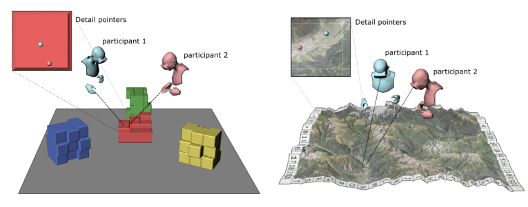 |
Shall I describe it or shall I move closer? Verbal references and locomotion in VR collaborative search tasks Riccardo Bovo, Daniele Giunchi, Enrico Costanza, Anthony Steed, Thomas Heinis Proceedings of 20th European Conference on Computer-Supported Cooperative Work |
| 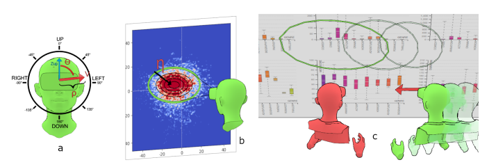 |
Real-time head-based deep-learning model for gaze probability regions in collaborative VR Riccardo Bovo, Daniele Giunchi, Ludwig Sidenmark, Hans Gellersen, Enrico Costanza, Thomas Heinis 2022 Symposium on Eye Tracking Research and Applications (ETRA 2022) Keywords: |
| 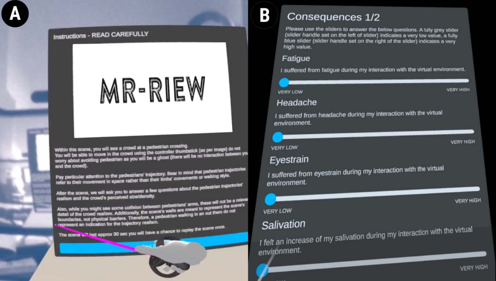 |
MR-RIEW: An MR Toolkit for Designing Remote Immersive Experiment Workflows Riccardo Bovo; Daniele Giunchi; Anthony Steed; Thomas Heinis Poster 2022 IEEE Conference on Virtual Reality and 3D User Interfaces Abstracts and Workshops (VRW) |

|
Lessons Learned Running Distributed and Remote Mixed Reality Experiments Anthony Steed, Daniel Archer, Klara Brandstätter, Ben James Congdon, Sebastian Friston, Priya Ganapathy, Daniele Giunchi, Lisa Izzouzi, Gun Woo Park, David Swapp, Felix Johannes Thiel Frontiers in Computer Science (2022) Keywords: |

|
Ubiq-Exp: A Toolkit to Build and Run Remote and Distributed Mixed Reality Experiments Anthony Steed, Lisa Izzouzi, Klara Brandstätter, Sebastian Friston, Benjamin James Congdon, Otto Olkkonen, Daniele Giunchi, Nels Numan, David Swapp Frontiers in Virtual Reality (2022) Keywords: |
| 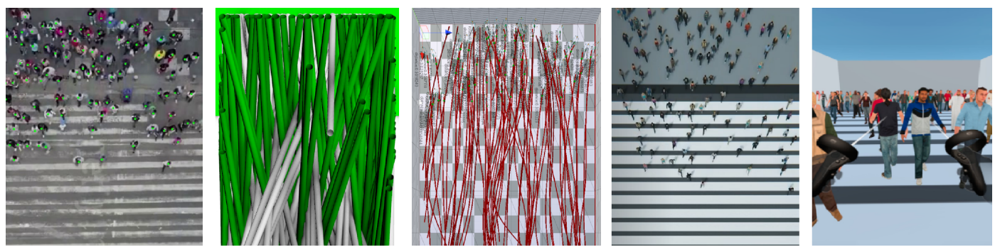 |
Perceived realism of pedestrian crowds trajectories in vr Daniele Giunchi, Riccardo Bovo, Panayiotis Charalambous, Fotis Liarokapis, Alastair Shipman, Stuart James, Anthony Steed, Thomas Heinis Proceedings of the 27th ACM Symposium on Virtual Reality Software and Technology (VRST 2021) Keywords: |
| 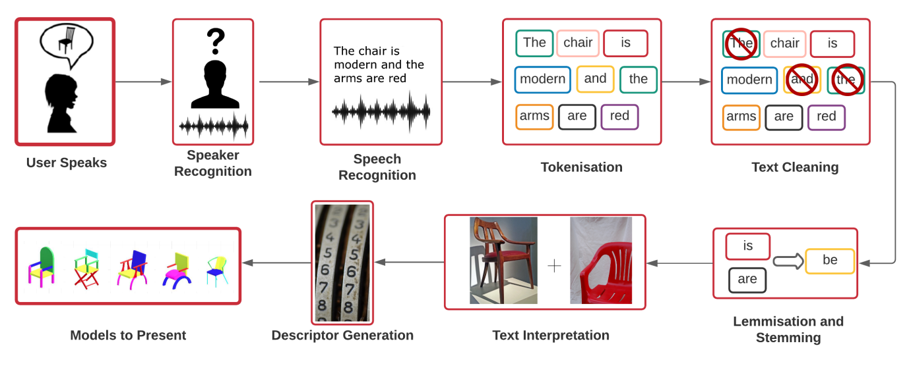 |
Mixing Modalities of 3D Sketching and Speech for Interactive Model Retrieval in Virtual Reality Daniele Giunchi, Alejandro Sztrajman, Stuart James, Anthony Steed IMX 2021 Keywords: |
| 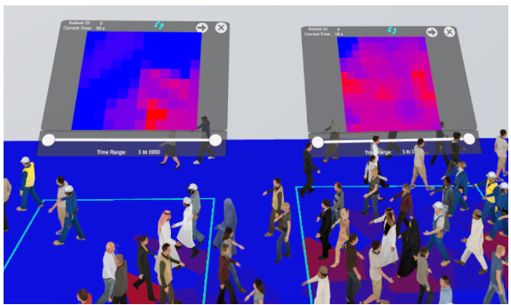 |
VR Toolkit for Identifying Group Characteristics Hugo Mayo, Alastair Shipman, Daniele Giunchi, Riccardo Bovo, Anthony Steed, Thomas Heinis Collective Dynamics 2021 Keywords: |
| 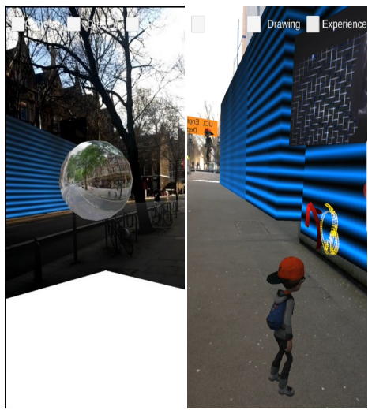 |
Real-time Collaboration Between Mixed Reality Users in Geo-referenced Virtual Environment Shubham Singh, Zengou Ma, Daniele Giunchi, Anthony Steed arXiv |

|
Selecting texture resolution using a task‐specific visibility metric Krzysztof Wolski, Daniele Giunchi, Shin-ichi Kinuwaki, Piotr Didyk, Karol Myszkowski, Anthony Steed, Rafal K Mantiuk Computer Graphics Forum Keywords: |

|
VisTexRes: Visibility thresholds for Texture Resolution Krzysztof Wolski, Daniele Giunchi, Shinichi Kinuwaki, Piotr Didyk, Karol Myszkowski, Anthony Steed, Rafal Mantiuk where Keywords: |
| 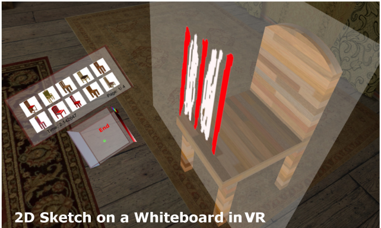 |
Mixing realities for sketch retrieval in Virtual Reality Daniele Giunchi, Stuart James, Donald Degraen, Anthony Steed VRCAI 2019 Poster Keywords: |
| 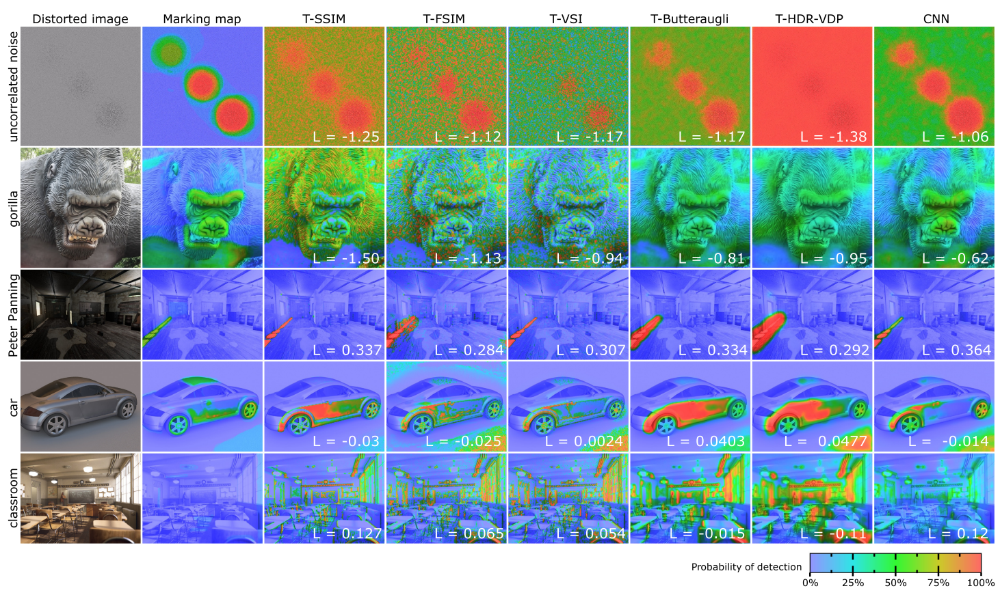 |
Dataset and metrics for predicting local visible differences Krzysztof Wolski, Daniele Giunchi, Nanyang Ye, Piotr Didyk, Karol Myszkowski, Radosław Mantiuk, Hans-Peter Seidel, Anthony Steed, Rafał K Mantiuk ACM Transactions on Graphics (TOG) 2018 Keywords: |
| 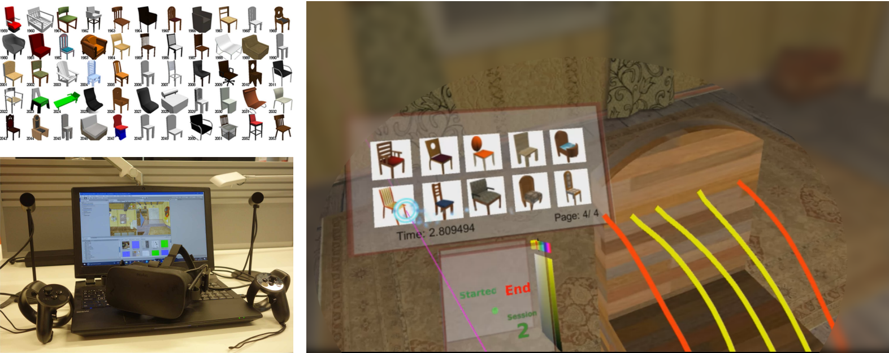 |
3D Sketching in Virtual Reality for immersive model search Daniele Giunchi, Stuart James, Anthony Steed Association for Computing Machinery (ACM) Expressive '18 Keywords: |
| 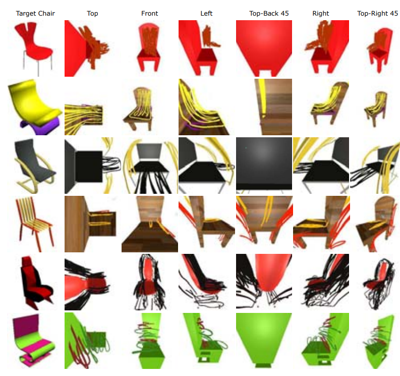 |
Model Retrieval by 3D Sketching in Immersive Virtual Reality Daniele Giunchi, Stuart James, Anthony Steed IEEE VR 2018 Posters Keywords: |
Quantum Information
|
Towards Quantum Computer Generated Holography Thesis for the II level Master of Optics and Quantum Information from La Sapienza University (Rome) 2023. Thesis Slides of the presentation |
Teaching
| 2024 | Induction to Python Programming for Computer Graphics and Virtual Environment | UCL | |
| 2023, 2024 | Computer Graphics | UCL | |
| 2022 | Image processing | UCL | |
| 2020-2024 | Virtual Environments | UCL | |
| 2019 | Advanced Deep Learning and Reinforcement Learning | DeepMind/UCL | |
| 2019 | Machine Vision | UCL | |
| 2018, 2020 | System Engineering | UCL | |
| 2017 | Computational Photography | UCL | |
| 2017 | Robotic Programming | UCL |
Mentoring
| 2025 | Molly Zhu | Real-Time Speech Captioning and Visualization in Collaborative Mixed Reality | (thesis project, UCL ME Computer Science) |
| 2024 | Rowan Meng | Embodied LLM-based Programming | (summer intern, UCL) |
| 2024 | Aiman Sohail | Generative Storytelling in Social VR | (summer intern, UCL) |
| 2024 | Animesh Srivastava | High-Resolution Novel View Synthesis Using 3D Gaussian Splatting: A Focus on Human Subjects | (thesis project, UCL AI Centre) |
| 2023 | Angela Yu | Interactive Avatar Appearance Modelling with Generative AI | (thesis project, UCL MEng Computer Science) |
| 2022 | Ana David | Asynchronous Collaborative Art Creation | (thesis project, Lisbon University) |
| 2021 | Hugo Mayo | Virtual Reality Toolkit for Crowd Analysis | (thesis project, Imperial College London ME CS) |
| 2020 | Shubham Singh | Real-time collaboration between users in geo-referenced virtual environment (supporting both VR and AR). | (thesis project, UCL MEng Computer Science) |
| 2017 | Jack Roper | Immersive 3D Scene Prototyping in Virtual Reality | (thesis project, UCL ME Computer Science) |